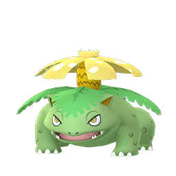
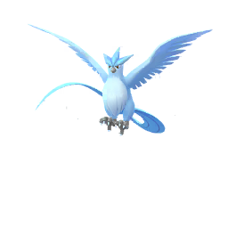
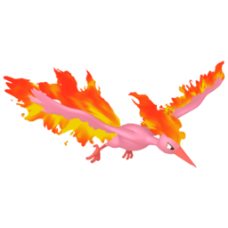

Os Pokémon iniciais de Kanto são os primeiros Pokémon que os treinadores recebem no início de suas jornadas na região de Kanto. São três Pokémon básicos de tipos diferentes, oferecidos pelo Professor Carvalho aos novos treinadores: Bulbasaur, Charmander e Squirtle.

Bulbasaur: Um Pokémon de tipo Grama/Venenoso. Bulbasaur é conhecido por sua planta bulbosa nas costas, que eventualmente evolui para Ivysaur e depois para Venusaur. Ele é considerado uma escolha equilibrada para iniciantes, com vantagens contra os Líderes de Ginásio Brock (do tipo Rocha) e Misty (do tipo Água).
Um Pokémon de tipo Fogo. Charmander é um pequeno lagarto com uma chama na ponta de sua cauda, que cresce em um poderoso Charizard. Escolher Charmander é uma opção desafiadora no início, já que tem desvantagem contra Brock, mas com treinamento, evolui para um dos Pokémon mais poderosos da região.
Squirtle: Um Pokémon de tipo Água. Squirtle é uma pequena tartaruga com casco, que evolui para Wartortle e depois para Blastoise. Ele é uma escolha sólida contra Brock e Misty, sendo resistente a ataques de tipo Rocha e Água.
Os treinadores têm que escolher um destes três Pokémon iniciais no começo de sua jornada e, com o tempo, treiná-los para se tornarem mais fortes e evoluírem. Esses Pokémon são icônicos na franquia Pokémon e têm sido adorados por fãs desde o lançamento dos jogos originais Pokémon Red e Pokémon Blue.
Na região de Kanto, existem alguns Pokémon lendários que são venerados por sua raridade e poder incomparável. Esses Pokémon lendários são figuras misteriosas, muitas vezes envoltas em mitos e lendas que capturam a imaginação dos treinadores de todo o mundo.

Articuno: Este majestoso Pokémon lendário é conhecido como o guardião do gelo. Articuno possui a habilidade de criar uma aura gélida ao seu redor, congelando tudo em seu caminho. Sua aparência elegante e seu poder sobre o frio o tornam uma presença imponente na região de Kanto.
Zapdos: Dotado de uma energia elétrica inigualável, Zapdos é o senhor dos céus na região de Kanto. Seus relâmpagos são tão poderosos que podem iluminar o céu durante tempestades. Sua velocidade e agilidade tornam-no um adversário formidável para qualquer treinador que ousar desafiá-lo.

Moltres: Conhecido como o guardião do fogo, Moltres é uma criatura lendária que irradia calor intenso por onde passa. Seu corpo flamejante é uma visão impressionante, e diz-se que sua simples presença é capaz de incendiar o próprio ar. Moltres é reverenciado como uma encarnação da chama eterna.
Esses Pokémon lendários são mais do que simples criaturas; são símbolos de poder e mistério na região de Kanto. Aqueles que buscam encontrá-los devem estar preparados para enfrentar desafios épicos e superar obstáculos inimagináveis. A lenda desses Pokémon continua a inspirar treinadores em sua busca pela grandeza e pela aventura.
Em Pokémon FireRed, uma dupla lendária de Pokémon desperta tanto fascínio quanto mistério: Mew e Mewtwo. Mew é conhecido como o Pokémon do "DNA" e é considerado o ancestral de todos os Pokémon, enquanto Mewtwo é sua criação artificial, uma experiência genética que deu errado.
Mew: Este Pokémon lendário é conhecido por sua natureza elusiva e habilidades misteriosas. Diz-se que Mew possui a capacidade de usar qualquer golpe de Pokémon, tornando-o extremamente versátil em batalha. Sua aparência cativante e aura de mistério o tornam um dos Pokémon mais cobiçados e procurados por treinadores de todo o mundo.
Mewtwo: Criado artificialmente a partir do DNA de Mew, Mewtwo é um Pokémon poderoso e implacável. Ele foi projetado para ser o Pokémon mais forte já criado, mas sua natureza rebelde e sua busca por compreender seu propósito na vida o levaram a rebelar-se contra seus criadores. Mewtwo é uma força formidável, com poderes psíquicos que rivalizam com os de qualquer outro Pokémon.
Em Pokémon FireRed, os treinadores têm a oportunidade de encontrar e capturar Mewtwo em uma caverna secreta, conhecida como a Caverna Celeste. Esta é uma tarefa desafiadora que requer habilidade, estratégia e paciência, mas aqueles que conseguem capturar Mewtwo ganham um aliado poderoso em sua jornada.
Tanto Mew quanto Mewtwo representam o poder oculto e a complexidade do mundo Pokémon. Suas histórias e habilidades continuam a fascinar treinadores e pesquisadores, inspirando-os a explorar os mistérios do universo Pokémon em busca de conhecimento e aventura.